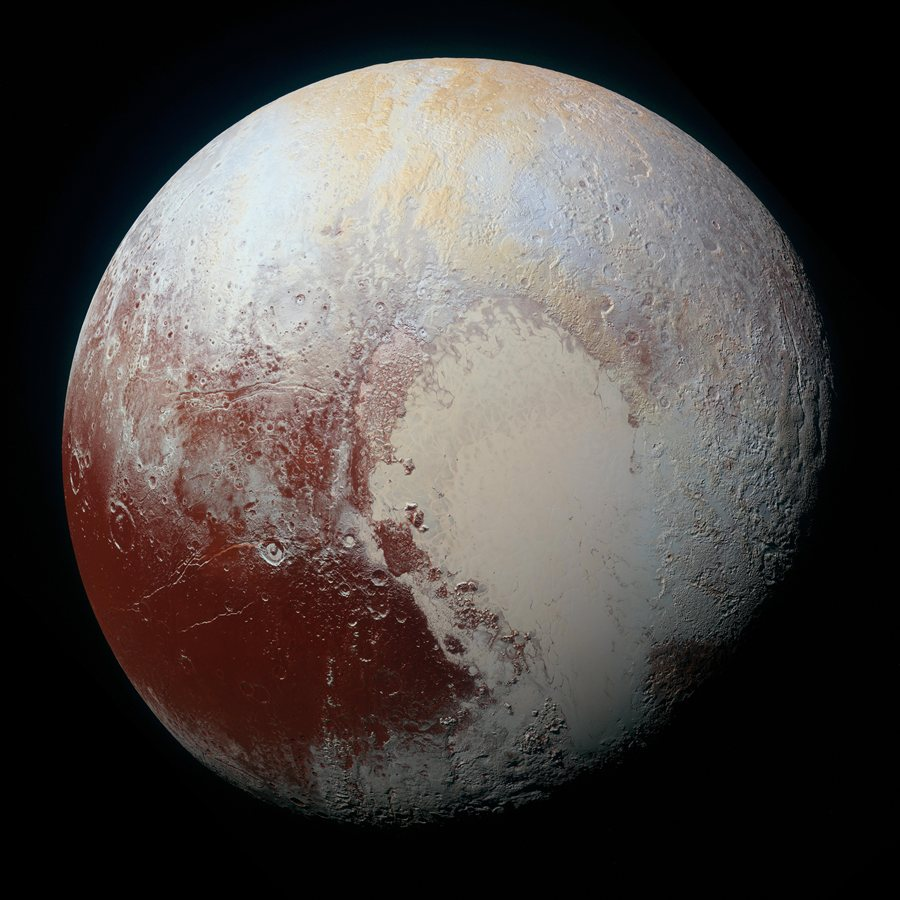

Planetas anões são corpos que giram ao redor do Sol e têm formato quase redondo, mas que não conseguiram "limpar" a vizinhança da sua órbita de outros objetos, por isso não são considerados planetas. A União Astronômica Internacional reconhece cinco planetas anões no Sistema Solar. O mais famoso é Plutão, que aparece na foto e foi considerado o nono planeta até 2006.
Plutão: entre -226 °C e -240 °C
Plutão: 2.377 km de diâmetro (menor que a nossa Lua)
Plutão: entre 4,3 bilhões e 7,5 bilhões de km
O mais famoso dos planetas anões. Fica no Cinturão de Kuiper, além de Netuno, e tem cinco luas conhecidas.
O menor dos cinco e o único que fica no Cinturão de Asteroides, entre Marte e Júpiter. Tem cerca de 940 km de diâmetro.
Quase do mesmo tamanho de Plutão, mas com mais massa. Sua descoberta, em 2005, levou à criação da categoria de planeta anão.
Gira tão rápido (um dia dura cerca de 4 horas) que ficou com formato alongado, parecido com um ovo. Tem anéis e duas luas.
Um dos maiores objetos do Cinturão de Kuiper, com cerca de 1.430 km. Seu nome homenageia o deus criador do povo Rapa Nui, da Ilha de Páscoa.